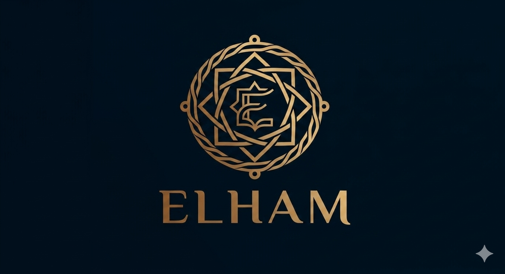

Full-Stack Developer in Training
Computer Science and Management student passionate about software development, leadership, and creating technology solutions that solve real-world problems.
I am a Computer Science and Management student with a strong interest in software development, leadership, and problem-solving. Alongside my academic studies, I actively participate in student leadership roles and continuously improve my technical skills in web development. My goal is to become a Full-Stack Developer capable of building technology solutions that create meaningful impact for students, organizations, and communities.
Currently pursuing a degree in Computer Science.
Currently pursuing a degree in Management.
Serving as Secretary of the Haramaya University Computing and Informatics students Association.
Pursuing studies in both Computer Science and Management.
Currently learning MongoDB, Express.js, React.js, and Node.js.
Serving as Secretary of the Haramaya University Computing and Informatics students Association (HUCISA), contributing to organizational planning, communication, documentation, and coordination of student activities.
Experienced in student leadership, communication, event coordination, and organizational management. Dedicated to supporting student growth through collaboration, innovation, and technology.
A professional portfolio website built using HTML, CSS, and JavaScript to showcase my skills, education, leadership experience, and projects.
HTML CSS JavaScriptA proposed platform designed to connect students with internship opportunities while helping organizations manage recruitment efficiently.
UI/UX Design System Analysis Project PlanningA responsive task management application developed using HTML, CSS, and JavaScript. Features include task creation, task deletion, search functionality, progress tracking, local storage support, and responsive design.
HTML CSS JavaScriptBecome a professional Software Engineer and Full-Stack MERN Developer, build impactful software solutions, gain industry experience through internships, and combine technology with management skills to create meaningful value.
Serving as Secretary of the Haramaya University Computer and Information Science Association.
Pursuing studies in both Computer Science and Management.
Currently learning Full-Stack Web Development using MongoDB, Express.js, React.js, and Node.js.
Download my latest CV to learn more about my education, leadership experience, technical skills, and projects.
📄 Download CV📧 Email: eeluktir@gmail.com
💻 GitHub: github.com/Elham-97
🔗 LinkedIn: linkedin.com/in/elham-ibrahim-463a26324